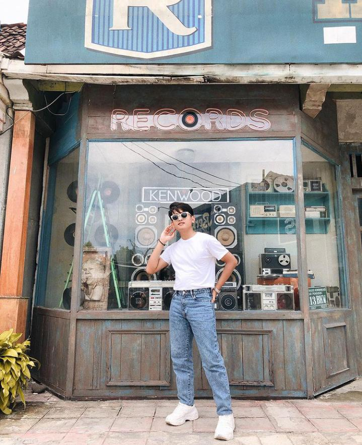
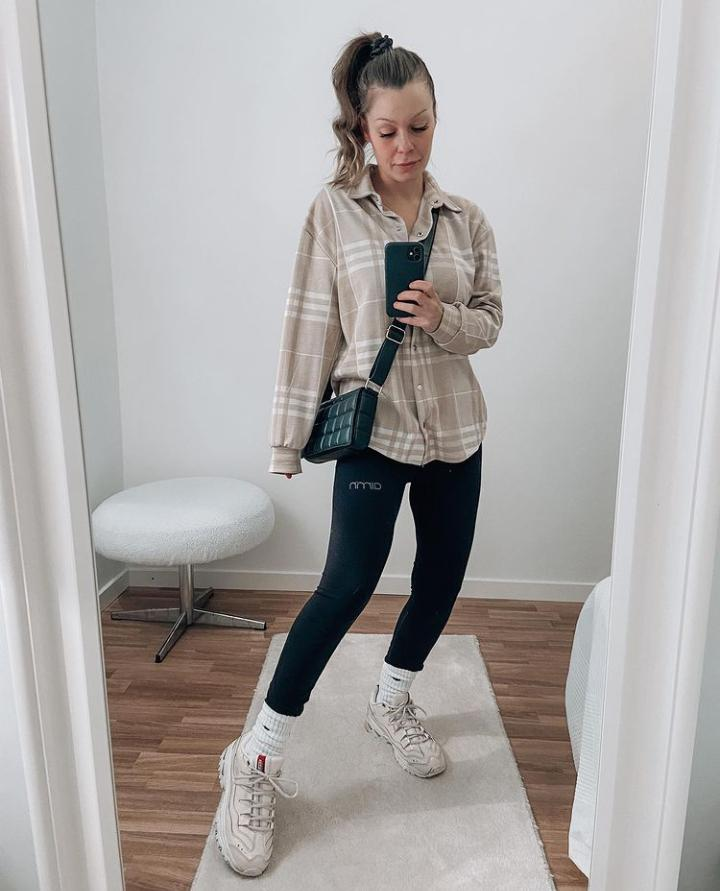
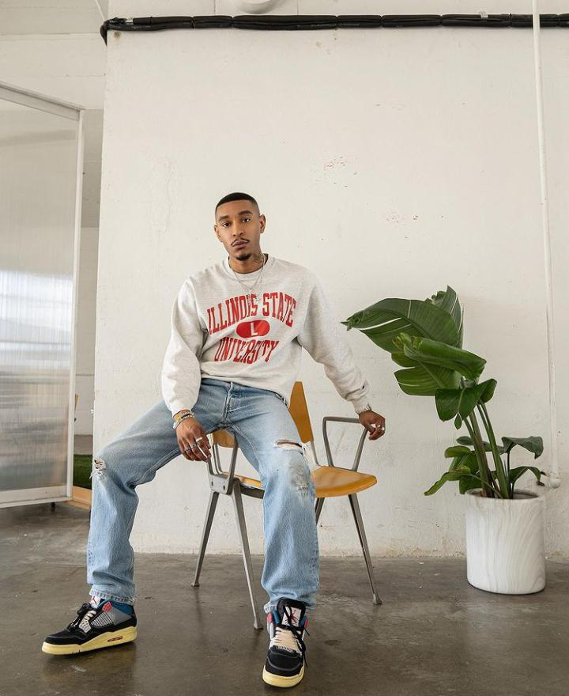
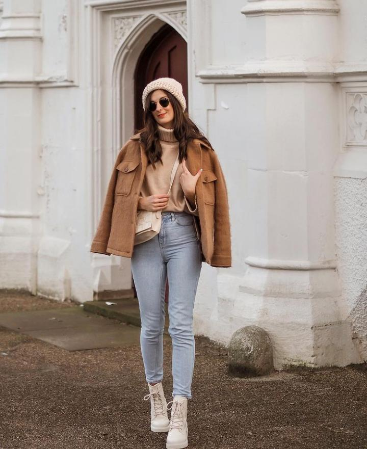
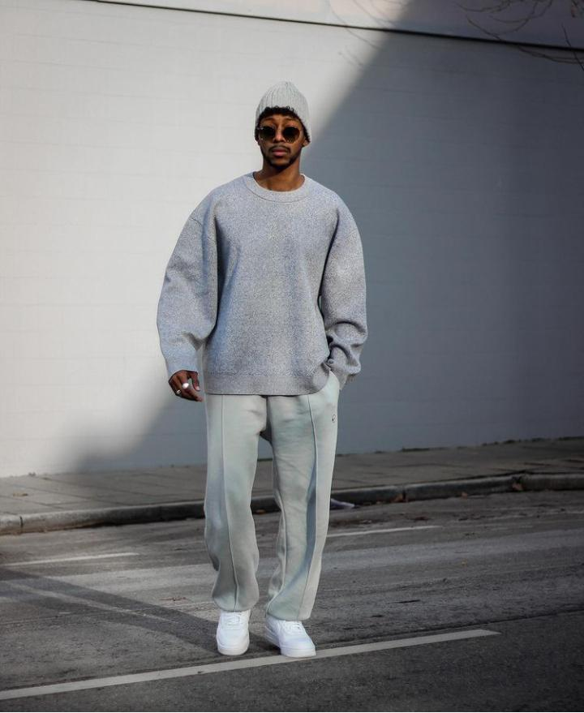
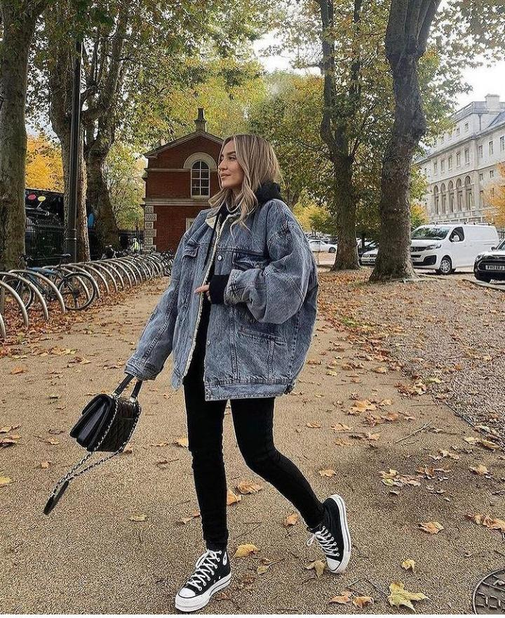
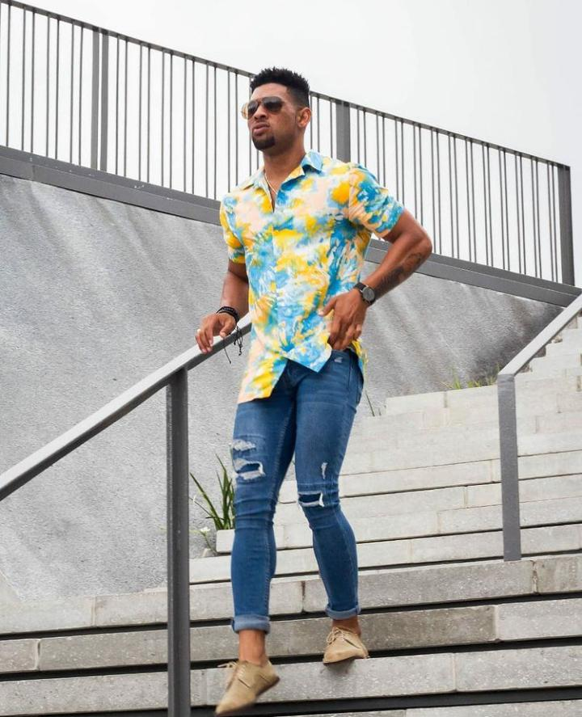
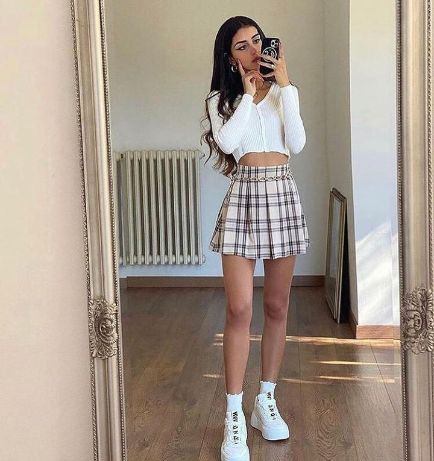
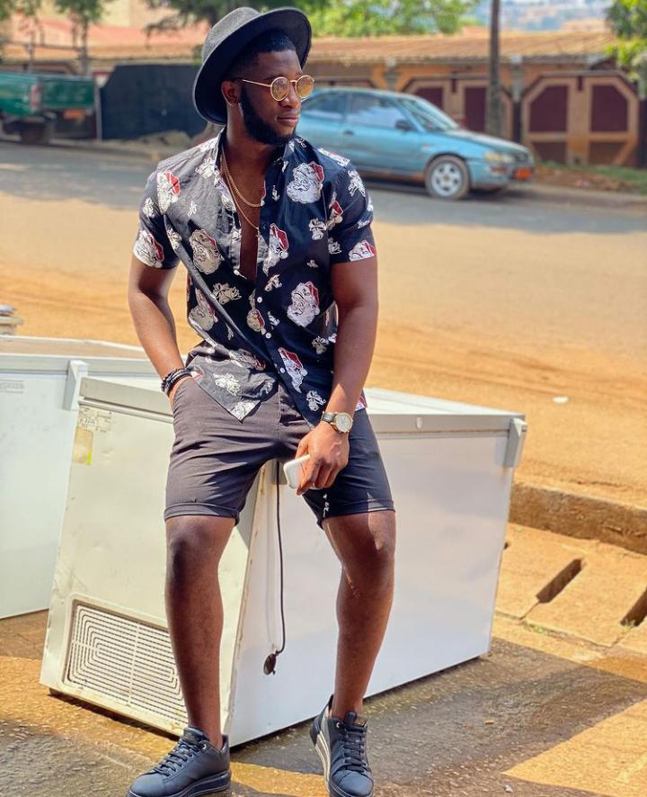
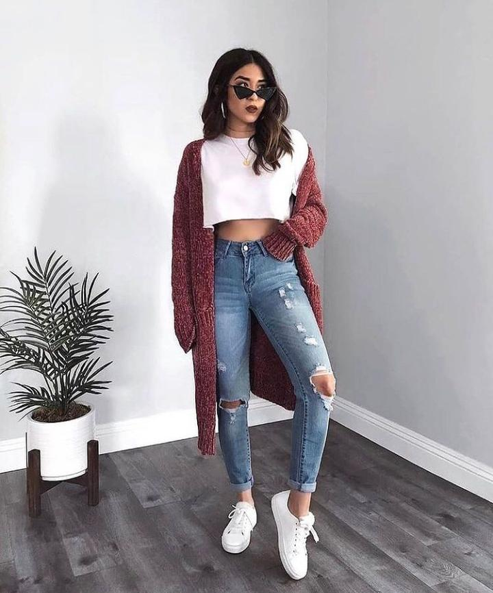

Wanna some relaxing music ? ?
Piano here
Guitar here
Where U go?


Another Related Topic :
Follow us


Introduction...
Siapanih yang kalo pakai pakaian itu itu aja, ya emang sih style tiap orang berbeda dan tentunya sesuai kenyamanan penggunannya. nah bagi kami penampilan itu sangat penting kawan apalagi mau ngejemput doi buat jalan jalan masa mau pakai baju kusut hehe udah jangan deh nter doi ngambek malah panjang urusannya hehe berikut ada secuil rekomendasi nih dariku yang cukup menarik oke lets cekidot.
Bagi cowo maupun ciwi sekalian pasti kadang suka bingung tentang outfit yang akan dikenakan kalau dirumah aja ya saran min sederhana aja asal nyaman dipakai nah kali ini yang kita bahas ialah outfit keluar rumah hehe.. jadi biar kalian tidak bingung lagi mau pakai outfit apa yang akan dipakai keluar bareng doi eh hehe. dan tentunya rekomendasi ini berdasarkan pengalaman yang pernah dialami dan cukup menarik untuk dibagikan ke kawan kawan semua
Bagi cowo cowo biasanya bodo amat dengan hal seperti ini, alay lah dsb namun kali ini tips yang diberikan adalah outfit simpel yang dapat dipadukan dari berbagai unsur nih jadi jika ingin mengenakan outfit seadanya kalian bisa me mix agar terlihat berbeda aja hehe nah bagi ciwi ciwi outfit sangat penting banget apalagi mau pergi dengan siapapun pasti milihnya sejam tuh eh 2 jam kali hehe.. namun hal itu dipilih yang terbaik dari yang ada meski ahirnya dibilang jelek juga eh wkwk...dan biasanya cewek akan selalu melihat rekomendasi ootd di instagram dan biasanya akan mencontoh berbagai rekomendasi tadi bilamana dirasa cocok pasti akan dipakai bila tidak maka akan tambah sebel hahaha...nah kalian tidak usah bingung bingung kali ini saran kita mudah kok simak selengkapnya...

Pertama Dengan kaos putih polos, celana jeans tidak ketat dan sepatu sneakers senada dengan kaos yaitu putih akan membuat tampilanmu simple tapi tetep rapi bro. Cocok dipakai untuk ke mall atau jalan-jalan santai. Kaos putih yang dimasukkan ke dalam jeans merupakan gaya outfit yang kekinian dan lagi hype di tahun 2021 ini. Kalo mau dipadukan dengan jaket jeans juga oke banget tuh, langsung coba!

Kedua kemeja basic emang ga pernah salah nih kawan buat ootd an simple, cocok dipakai untuk acara formal maupun semi formal. Tergantung perpaduan yang kita buat aja, kalo di style 1 ini memakai legging hitam ya dan pastinya outfit ini cocok untuk acara santai atau non formal. Dengan slingbag hitam bercorak, sneakers putih dengan kaus kaki menambah kesan santai itu sendiri. Langsung coba!

Ketiga Style satu ini keren buat anak yang suka keluar malam bro. Dengan crewneck yang pas di badan dalam artian tidak oversized dan tidak terlalu ngepres ini cocok banget dipadukan dengan celana jeans robek di lutut, dengan sepatu sneakers mix warna akan menambah kesan santai dan yang pastinya simple banget kan ya. kuy langsung coba

Keempat kalo style ini, cocok banget dibuat jalan-jalan santai, ke mall, dan acara santai lainnya. Menggunakan head hat cream senada dengan pakaiannya, blezer coklat, turtleneck cream tua, dengan jeans soft blue dan slingbag broken white tak lupa dengan boots broken white menjadikan tampilan senada nan anggun loh kawan. Langsung coba deh.

Kelima simply outfit ini mengusung tema simple dan senada yaitu warna abu-abu. Laki-laki identik dengan warna gelap yang mengisyaratkan akan ketegasan bro, jadi warna gelap gaakan salah deh kalo dibuat outfit! Dengan oversized basic crewneck warna abu-abu, celana bahan abu-abu, head hat abu-abu, dan sepatu putih kayak gambar diatas dijamin cocok di segala situasi non formal deh, mau ke mall cocok, jalan sore cocok, motoran cocok, sekadar makan di resto juga cocok loh, coba deh...

Keenam ini outfitnya memakai oversized denim jacket, ukuran XXL tuh hihihi. Cocok banget dipadukan dengan kaos hitam untuk inner, jeans hitam juga, dan sneakers serta sliing bag senada. Rekomen buat kamu yang pengin tampil stylist tapi tetep santai kawan. cobain deh.

Ketujuh, Kalo style ini pakai outfit cerah yaa kawan, kemeja floral dengan warna mix kuning, biru, putih ditambah dengan jeans dark blue yang terdapat aksen sobeknya, jug dengan simple shoes menjadikan tampilan keren banget yaa. Jangan lupa jam tangan, dan kaca mata untuk aksesoris.
 Kedelapan kita juga rekomendasikan pakaian mini skirt nih di style non formal kali ini. Skirt motif square berwarna cream, cocok banget ya dipakai untuk kulit yang tidak terlalu cerah. Dipadukan dengan crop top lengan panjang putih, dan sneakers putih menambah kesan tinggi buat badanmu kawan.

Kesembilan, Hampir sama dengan tipe style nomor 7, cuma di style ini pakai celana pendek dimana celana pendek ini mencirikan gaya nonformal atau santai bro! Cocok banget kemeja dipadukan dengan celana pendek, sneakers, topi untuk jalan-jalan santai menikmati sunset bareng doi, atau kegiatan non formal lain.
 Terakhir kesepuluh outfit terakhirini cocok kali buat ke bioskop nih hihi. Dengan long outer warna merah bata, crop top putih, dipadukan dengan celana jeans robek, dan juga sneakers putih emang perpaduan yang ciamik! Apalagi ditambah slingbag putih tuh sama kaca mata hitam, the best deh. Untuk outfit apapun, emang sneakers putih gapernah salah.
Kesimpulan~
Jadi bagaimana sudahkah berpusing pusing mencoba rekomendasi tadi?? eh tidak pusing kan rekomendasinya simpel dan mudah nah itu namanya perjuangan kawan biar nantinya kalian bisa tampil beda dan glow up tentunya tanpa disangka sangka sebenernya mah mudah aja asal mau saja hehe... jika budget terbataspun gamasalah pakai yang basic saja kita olah pakaian yang kita punya sehingga ga itu itu aja yang dipakai.
Ingat kawan bukan karena rekomendasi ini diberikan terus kalian terpacu hanya dari ini saja, nah kalian salah tuh outfit kalian, kalian sendiri yang kalian tentukan dan tentunya sesuai selera dan kenyamanan yang kalian inginkan bukan paten rekomendasi harus ditiru cuma buat referensi aja kawan jika tertarik bisa langsung coba deh hehe.. lah min rekomendasimu gaada yang buat cewe berhijab min iya sabar nih untuk cewe berhijab biasanya lebih pinter tuh nyesuein nya dan pastinya cantik cantik tapi tenang kita akan kasih rekomendasi dari cuplikan dibawah ini